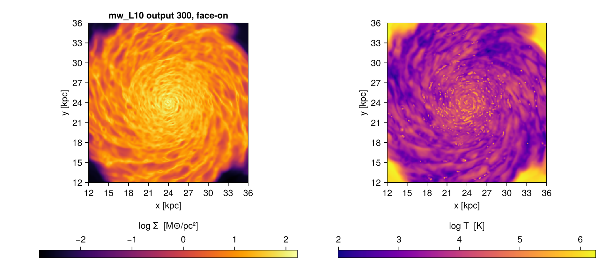

Pipelines: writing less of the same thing
This page is also an executable Jupyter notebook: open / download pipelines.ipynb. The notebooks run end-to-end and double as part of Mera's test suite.
Most analysis scripts open the same way. A getinfo, then one getter per component, each repeating the selection you already decided on:
info = getinfo(300, path)
gas = gethydro(info, lmax=10, xrange=[-10., 10.], center=[:bc], range_unit=:kpc)
grav = getgravity(info, lmax=10, xrange=[-10., 10.], center=[:bc], range_unit=:kpc)
part = getparticles(info, lmax=10, xrange=[-10., 10.], center=[:bc], range_unit=:kpc)Nothing there is wrong, but three quarters of it is repetition, and repetition is where a selection quietly drifts between components. Mera gives you two independent ways to remove it, and they compose.
One bundle for the selection
ArgumentsType, usually written myargs, holds the selection once and travels with you. It is covered in full on Bundled Arguments; the short version:
args = ArgumentsType(lmax=10, xrange=[-10., 10.], yrange=[-10., 10.],
center=[:bc], range_unit=:kpc)
gas = gethydro(info, myargs=args)
proj = projection(gas, :sd, myargs=args) # the same bundle, further down the pipelineChange the region once and every step follows. Nothing can drift, because there is only one copy of the numbers.
When you need a variant, withargs derives one and leaves the original alone:
coarse = withargs(args; lmax=7) # same region, fewer levels
zoom = withargs(args; xrange=[-2., 2.], yrange=[-2., 2.])Without it that is a deepcopy and an assignment, with the original one slip away from being edited in place.
using Mera, CairoMakie
CairoMakie.activate!()
# This page runs on mw_L10 output 300, a 48 kpc Milky-Way box with 640 CPU files.
# Point MW at any RAMSES output or converted MERA file of your own: every step below
# works the same either way.
MW = get(ENV, "MERA_MW", "/Volumes/FASTStorage/Simulations/Mera-Tests/RAMSES/mw_L10")
# the selection, written once
args = ArgumentsType(lmax=9,
xrange=[-12., 12.], yrange=[-12., 12.], zrange=[-2., 2.],
center=[:bc], range_unit=:kpc)
# a variant, without touching the original
zoom = withargs(args; xrange=[-4., 4.], yrange=[-4., 4.])
(args.xrange, zoom.xrange)*__ __ _______ ______ _______
| |_| | | _ | | _ |
| | ___| | || | |_| |
| | |___| |_||_| |
| | ___| __ | |
| ||_|| | |___| | | | _ |
|_| |_|_______|___| |_|__| |__|
Mera v1.8.0 | Julia 1.12.7 | 8 threads([-12.0, 12.0], [-4.0, 4.0])One call for the loading
loadall does the other half: getinfo and every getter in a single call, returning the components named.
(; hydro, gravity, particles) = loadall(path, 300; myargs=args)That is the four lines above. The names on the left are ordinary variables you wrote, so a reader can see where each came from, and every tool that reads Julia can follow them.
It returns a NamedTuple, so info comes back too and nothing is lost:
d = loadall(path, 300; myargs=args)
d.info.levelmax
d.hydroBy default it reads every component the snapshot has. A run without gravity returns fewer fields rather than failing, so the same line works across simulations that do not hold the same things:
d = loadall(path, 300)
keys(d) # (:hydro, :gravity, :particles, :info), or fewerAll six readers are covered, not just the three above. Clump catalogues, sink particles and radiative-transfer data come back the same way, and each reader is only attempted when info says the snapshot holds it:
| component | reader |
|---|---|
:hydro, :gravity, :particles | gethydro, getgravity, getparticles |
:clumps, :sinks, :rt | getclumps, getsinks, getrt |
The keywords you pass are forwarded only to the readers that accept them. getsinks, for instance, takes no myargs, and a sink catalogue has no spatial selection to apply anyway; passing a bundle for the other components does not disturb it. If a component does fail to read you get a warning and nothing in that field, never a silent gap.
The same call on a converted snapshot
loadall looks for output_NNNNN.jld2 in the folder and dispatches accordingly:
| RAMSES output | converted MERA file | |
|---|---|---|
| metadata | getinfo | infodata |
| components | gethydro, getgravity, … | loaddata |
You call neither directly, and the call does not change, so converting your data does not mean rewriting your scripts:
(; hydro, gravity, particles) = loadall("/path/to/ramses", 300) # RAMSES output
(; hydro, gravity, particles) = loadall("/path/to/merafiles", 300) # converted, same lineSelection works on both. Measured on a 28.3M-cell snapshot, taking a 10 x 10 x 4 kpc slab out of a MERA file:
d = loadall(merapath, 300; components=(:hydro,),
xrange=[-5., 5.], yrange=[-5., 5.], zrange=[-2., 2.],
center=[:bc], range_unit=:kpc)
# 2,777,683 cells of 28,320,979The macros work the same way on both, and so do bundles:
args = ArgumentsType(xrange=[-4., 4.], yrange=[-4., 4.], zrange=[-1., 1.],
center=[:bc], range_unit=:kpc)
@loadall merapath 300 hydro gravity myargs=args
@project hydro sd=>:Msol_pc2 T=>:Kinfo comes back in the NamedTuple either way, so you never need to decide whether to call getinfo or infodata yourself.
Two differences to know about
The spatial selection costs differently. On a RAMSES output it is applied while reading, so the rest is never touched. A MERA file is read whole and then cut. See Performance for why, and for when to save the subregion as its own file instead.
lmax does not apply to a MERA file. A converted file holds the levels it was written with, and loaddata has no level cap, so every stored level comes back. The same bundle therefore gives different cell counts on the two routes. Measured on mw_L10 output 300, a 24 x 24 x 4 kpc slab with lmax=9:
| cells | gas mass | |
|---|---|---|
| RAMSES output | 2,761,245 | 6.786e9 M⊙ |
| MERA file | 8,329,355 | 6.786e9 M⊙ |
The mass is identical, because capping the level coarsens cells without losing any of them; only the cell count differs. loadall warns when you pass lmax on the MERA-file route rather than quietly returning something else than you asked for. If you want a coarser file, apply the cap when you convert.
Ask for a subset by name, with or without a bundle:
loadall(path, 300; components=(:hydro, :particles), myargs=args)
loadall(path, 300; components=(:hydro,), lmax=9) # keywords work inline too# getinfo and every getter in one call, honouring the bundle
(; hydro, particles, info) = loadall(MW, 300; components=(:hydro, :particles), myargs=args)
(cells = length(hydro.data), particles = length(particles.data), levelmax = info.levelmax)loadall: output 300 (RAMSES output), components: hydro, particles
Processing files: 100%|██████████████████████████████████████████████████| Time: 0:00:17 (27.54 ms/it)
✓ File processing complete! Combining results...
┌ Warning: getparticles: the `lmax` level cap is not yet supported for particles; loading the full level range (lmax=10). The `lmax` argument is currently ignored.
└ @ Mera ~/code-github/Mera.jl/src/read_data/RAMSES/getparticles.jl:246(cells = 2761245, particles = 541797, levelmax = 10)# a number from the same region
msum(hydro, :Msol)6.7859604858483305e9More than gas, gravity and stars
Most snapshots hold hydro, gravity and particles, which is why the examples name those. Nothing is limited to them. Ask for clumps, sinks or radiative transfer by name, in the function or in the macro:
(; hydro, rt) = loadall(path, 7; components=(:hydro, :rt))
(; clumps, sinks) = loadall(path, 300; components=(:clumps, :sinks))
@loadall path 7 hydro rt # the macro takes them too
@loadall path 300 hydro clumps sinksLeft to itself loadall reads whatever info reports, so one line covers snapshots that hold different things. Three public test simulations, the same call on each:
# three small public fixtures, each carrying something different
for (name, out) in (("stromgren3d", 7), ("clumps3d", 4), ("sinks3d", 2))
path = download_testdata(name, verbose=false)
d = loadall(path, out, verbose=false, show_progress=false)
println("$(rpad(name, 14)) output $out -> $(keys(d))")
endstromgren3d output 7 -> (:hydro, :rt, :info)
clumps3d output 4 -> (:hydro, :gravity, :clumps, :info)
sinks3d output 2 -> (:hydro, :gravity, :particles, :sinks, :info)The macro, and when not to reach for it
@loadall is a thin wrapper that expands to exactly the destructuring above:
@loadall path 300 hydro gravity particlesIt binds hydro, gravity, particles and info in your scope. That is a normal thing for a Julia macro to do, in the same family as @unpack, @variables and @parameters, and it is fine in scripts and notebooks alike: the line that produced the names is right there above them.
Bundles work here too, so the macro loses nothing:
@loadall path 300 hydro gravity myargs=args
@loadall path 300 hydro particles lmax=10 range_unit=:kpc
@loadall path 300 hydro rt clumps sinksThe macro creates the variables as it expands, so there is no assignment to hydro or gravity written anywhere in your file. In a script or a notebook that reads fine: the @loadall line sits right above and names everything it creates.
Inside a longer function, or in package code, prefer the explicit form. Someone reading it sees where hydro came from on the line itself, and editors, linters and "go to definition" can follow a plain assignment, which they cannot always do through a macro. It costs a few characters:
(; hydro, gravity, particles) = loadall(path, 300; myargs=args)Both forms call the same function and return the same objects; pick whichever reads better where you are.
# the macro form binds the names directly
@loadall MW 300 hydro myargs=args
length(hydro.data)loadall: output 300 (RAMSES output), components: hydro
Processing files: 100%|██████████████████████████████████████████████████| Time: 0:00:21 (33.46 ms/it)
✓ File processing complete! Combining results...2761245One call for the projection
projection returns a single object whose maps is a dictionary, so pulling several quantities out of it is a line of lookups:
pj = projection(gas, [:sd, :T], myargs=args)
sd = pj.maps[:sd]; T = pj.maps[:T]@project does that in one line, and asking for the quantities together is also the form that lets the projection use its threads, see Performance:
@project gas sd T myargs=argssd and T are now the maps, and proj is the full object, so the extent and everything else stay reachable:
heatmap(proj.extent[1:2], proj.extent[3:4], sd)Units go with the quantity they belong to, so adding a third cannot silently misalign a positional list:
@project gas sd=>:Msol_pc2 T=>:K myargs=args
@project gas sd=>:Msol_pc2 T # anything without a unit stays :standardKeywords pass straight through, so off-axis needs no separate macro, and neither does anything else projection accepts:
@project gas sd inclination=60 azimuth=30 binning=:exact
@project gas sd pxsize=[100., :pc] direction=:x
@project gas sd mask=my_mask xrange=[-5., 5.] center=[:bc] range_unit=:kpcEvery keyword=value you write is handed straight to the underlying function, so any keyword the getters or projection accept works here too, including ones added later.
What a macro cannot take is a ready-made collection of keywords. Use the function for that:
projection(gas, [:sd]; kws...)The macro says so if you try. A test checks that each macro gives the same result as the call it stands for.
# maps in physical units, bound to names; `proj` carries the extent and the rest
@project hydro sd=>:Msol_pc2 T=>:K myargs=args
(sd = size(sd), T = size(T), extent_kpc = round.(proj.extent, digits=1))[Mera]: 2026-09-09T17:33:44.255
center: [0.5, 0.5, 0.5] ==> [24.0 [kpc] :: 24.0 [kpc] :: 24.0 [kpc]]
domain:
xmin::xmax: 0.25 :: 0.75 ==> 12.0 [kpc] :: 36.0 [kpc]
ymin::ymax: 0.25 :: 0.75 ==> 12.0 [kpc] :: 36.0 [kpc]
zmin::zmax: 0.4583333 :: 0.5416667 ==> 22.0 [kpc] :: 26.0 [kpc]
Selected var(s)=(:sd, :T)
Weighting = :mass
Effective resolution: 512^2
Map size: 256 x 256
Pixel size: 93.75 [pc]
Simulation min.: 93.75 [pc]
Available threads: 8
Requested max_threads: 8
Variables: 2 (T, sd)
Processing mode: Variable-based parallel (2 threads)(sd = (256, 256), T = (256, 256), extent_kpc = [12.0, 36.0, 12.0, 36.0])fig = Figure(size=(950, 420))
for (i, (m, lab, cm)) in enumerate(((sd, "log Σ [M⊙/pc²]", :inferno),
(T, "log T [K]", :plasma)))
ax = Axis(fig[1, i], aspect=DataAspect(), xlabel="x [kpc]", ylabel="y [kpc]",
title = i == 1 ? "mw_L10 output 300, face-on" : "")
hm = heatmap!(ax, proj.extent[1:2], proj.extent[3:4], log10.(max.(m, eps())); colormap=cm)
Colorbar(fig[2, i], hm, label=lab, vertical=false)
end
fig
# off-axis needs no separate macro: the keywords pass straight through
@project hydro sd=>:Msol_pc2 inclination=60 azimuth=30 myargs=args
size(sd)[Mera]: 2026-09-09T17:33:58.540
center: [0.5, 0.5, 0.5] ==> [24.0 [kpc] :: 24.0 [kpc] :: 24.0 [kpc]]
domain:
xmin::xmax: 0.25 :: 0.75 ==> 12.0 [kpc] :: 36.0 [kpc]
ymin::ymax: 0.25 :: 0.75 ==> 12.0 [kpc] :: 36.0 [kpc]
zmin::zmax: 0.4583333 :: 0.5416667 ==> 22.0 [kpc] :: 26.0 [kpc]
Selected var(s)=(:sd,)
Weighting = :mass
Off-axis LOS = [0.433, -0.75, 0.5] (binning=:overlap)
Effective resolution: 512^2 → map size: 353 x 215(353, 215)A whole opening, in three lines
args = ArgumentsType(lmax=10, xrange=[-10., 10.], yrange=[-10., 10.],
center=[:bc], range_unit=:kpc)
(; hydro, particles) = loadall(path, 300; components=(:hydro, :particles), myargs=args)
@project hydro sd T myargs=argsThe selection appears once, the loading appears once, and the projection reuses both. Three lines that in full would be a getinfo, two getters repeating the same six keywords, a projection repeating them again, and two dictionary lookups.
Selecting inside the table
Two more macros work on a loaded object rather than on the loading. They are documented with the features they belong to, and listed here so the pipeline story is in one place:
@filter, @where, @apply | value-based selection on the table, see Masking and Filtering |
@region | compose geometric regions, see Get Subregions |
A complete workflow
From a path to a figure and a number, with every tool on this page doing its part.
using Mera, CairoMakie
path = "/path/to/simulation"
# 1. the selection, written once
args = ArgumentsType(lmax=10,
xrange=[-15., 15.], yrange=[-15., 15.], zrange=[-3., 3.],
center=[:bc], range_unit=:kpc)
# 2. everything the snapshot has, in one call, honouring that selection
(; hydro, particles, info) = loadall(path, 300; myargs=args)
# 3. a number: total gas mass in the region
mass = msum(hydro, :Msol)
println("gas mass in the slab: ", round(mass, sigdigits=4), " Msol")
# 4. maps in physical units, bound to names
@project hydro sd=>:Msol_pc2 T=>:K myargs=args
# 5. a figure, using the extent the projection recorded
fig = Figure(size=(900, 380))
for (i, (m, label)) in enumerate(((sd, "Σ [M⊙/pc²]"), (T, "T [K]")))
ax = Axis(fig[1, i], aspect=DataAspect(), xlabel="x [kpc]", ylabel="y [kpc]")
hm = heatmap!(ax, proj.extent[1:2], proj.extent[3:4], log10.(m); colormap=:inferno)
Colorbar(fig[2, i], hm, label="log10 " * label, vertical=false)
end
figTwo things worth noticing. args is written once and reaches the loading and the projection, so the map and the mass describe the same region by construction. And proj carries the extent, so the axes are in kpc without you tracking the conversion yourself.
To narrow the region without touching the original bundle:
zoom = withargs(args; xrange=[-3., 3.], yrange=[-3., 3.])
(; hydro) = loadall(path, 300; components=(:hydro,), myargs=zoom)
@project hydro sd=>:Msol_pc2 myargs=zoomAnd the same, in the explicit form, for a script or a package:
d = loadall(path, 300; myargs=args)
proj = projection(d.hydro, [:sd, :T], [:Msol_pc2, :K], myargs=args)
sd, T = proj.maps[:sd], proj.maps[:T]See also
- Bundled Arguments,
myargsin depth - Load by Selection, what the selection keywords mean
- Multi-threading, for reading several snapshots at once